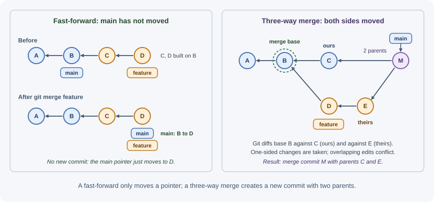
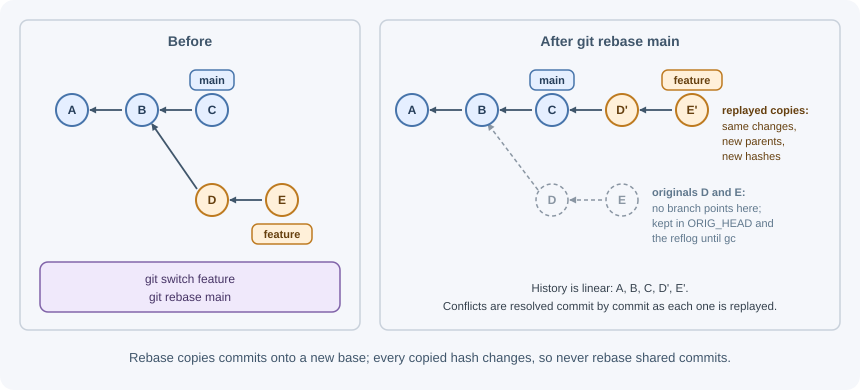
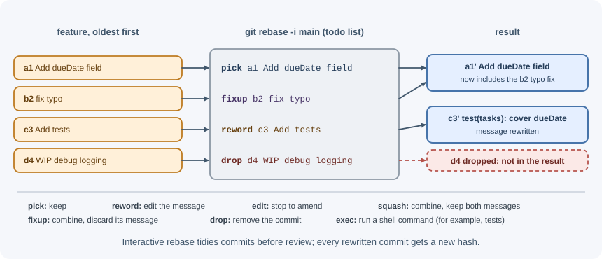
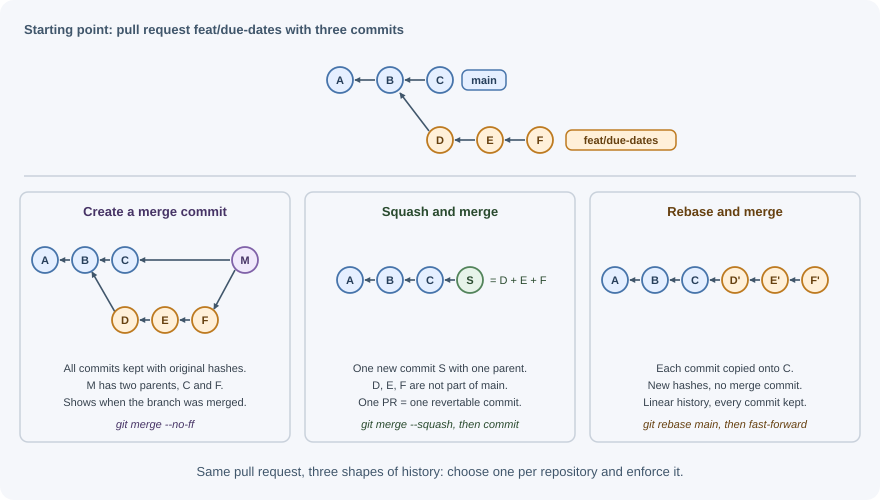

Branching, Merging, and Rebasing¶
Branches let several lines of work proceed at once; merging and rebasing bring them back together. Every team uses these three operations dozens of times a day, and most painful Git incidents (lost work, duplicated commits, broken shared branches, bad conflict resolutions) come from misunderstanding them.
This lesson explains branches as movable pointers, fast-forward and three-way merges, merge commits, conflicts and the tools for resolving them, how rebase replays commits, interactive rebase for cleaning up a branch, the golden rule of rebasing, the trade-offs between merge, rebase, and squash merging, and cherry-picking.
Why it matters¶
How you integrate branches shapes your history, and history is a working
tool: git log, git blame, git bisect, and git revert all depend
on it. A messy history full of "fix typo" and "WIP" commits makes
bisecting and reviewing slow. Rewriting history that teammates already
pulled causes duplicated commits and lost work. A conflict resolved
carelessly can silently drop a bug fix. Knowing exactly what each
operation does to the commit graph lets you choose the right one, keep
main clean and deployable, and recover calmly when something goes
wrong.
Real-world usage¶
- The Linux kernel. The kernel's maintainer guide Rebasing and merging states that history exposed beyond your private system should usually not be changed, that you should not rebase a branch containing other people's history, and that the kernel community "is not scared by seeing merge commits", because at its scale avoiding merges would be nearly impossible.
- The Git project itself. The gitworkflows manual describes how Git is developed: one topic branch per feature, topic branches merged into integration branches, and the rule that published history is not rewritten.
- GitHub pull requests. GitHub's About merge methods page documents the three ways a pull request can land (merge commit, squash, rebase) and notes that GitHub's rebase-and-merge always creates new commit SHAs, even when a fast-forward would be possible.
Popular tools and providers: the Git CLI, GitHub, GitLab, and
Bitbucket merge buttons, merge tools such as VS Code's merge editor,
JetBrains IDEs, Meld, KDiff3, and Beyond Compare, and stacked-branch
helpers such as Git's own rebase --update-refs.
How it works¶
Branches are movable pointers¶
A branch is a ref that points to one commit. Creating a branch writes a new pointer; committing on a branch moves its pointer forward to the new commit. Nothing is copied.
git switch -c feat/task-due-dates # create and switch (same as checkout -b)
git branch # list local branches, * marks HEAD
git branch -vv # with tip commit and upstream status
git switch main # move HEAD to another branch
git branch --merged main # branches whose tips are reachable from main
git branch -d feat/task-due-dates # delete only if merged
git branch -D experiment # force delete (commits remain in the reflog)
Because branches are cheap, Git workflows use them for everything: one branch per feature, bug fix, or experiment, merged and deleted within days.
Fast-forward and three-way merges¶
git merge <branch> integrates another branch into the current one.
What happens depends on the shape of the graph.
Fast-forward. If the current branch has not moved since the other branch started (its tip is an ancestor of the other branch's tip), Git simply moves the pointer forward. No new commit is created and history stays linear.
Three-way merge. If both branches have new commits, Git finds the
merge base (the best common ancestor, git merge-base main feature)
and compares three snapshots: the base, "ours" (the current branch), and
"theirs" (the branch being merged). For each region of each file:
| Base vs ours | Base vs theirs | Result |
|---|---|---|
| unchanged | unchanged | keep the base |
| changed | unchanged | take ours |
| unchanged | changed | take theirs |
| changed | changed identically | take the change once |
| changed | changed differently | conflict |
The result is recorded as a merge commit with two parents.

You can control which kind you get:
git merge --ff-only feature # fast-forward or fail: never creates a merge commit
git merge --no-ff feature # always create a merge commit, even if ff is possible
git merge --squash feature # stage the combined changes; you commit them yourself
Since Git 2.34 the default merge strategy is ort ("Ostensibly
Recursive's Twin"), a faster rewrite of the older recursive strategy
that also handles renames better. Two options are often confused:
-X ours/-X theirsare options to the strategy: merge normally, but resolve conflicting hunks in favor of one side.-s oursis a different strategy: record a merge but keep our tree entirely, discarding all of their changes. It is rarely what you want.
Merge commits and first-parent history¶
A merge commit's first parent is the branch you were on; the second is
the branch you merged. That ordering is useful: on a main where every
change lands through a merged pull request, git log --first-parent main
shows one entry per merged PR, hiding the individual branch commits.
git revert -m 1 <merge> (see undoing mistakes)
also relies on it.
Conflicts and how to resolve them¶
A conflict means Git cannot decide; it is not an error. Git stops,
writes conflict markers into the file, and records the three versions in
the index (stages 1, 2, and 3). Here is a real conflict from TaskFlow
API, where main changed the page size to 25 and a feature branch
changed it to 50:
<<<<<<< HEAD
const PAGE_SIZE = 25;
=======
const PAGE_SIZE = 50;
>>>>>>> feat/bigger-pages
module.exports = { PAGE_SIZE };
With merge.conflictStyle = zdiff3 (or diff3), Git also shows the
common ancestor, which often reveals the right answer:
<<<<<<< HEAD
const PAGE_SIZE = 25;
||||||| 555a272
const PAGE_SIZE = 20;
=======
const PAGE_SIZE = 50;
>>>>>>> feat/bigger-pages
module.exports = { PAGE_SIZE };
Now you can see both sides changed the original value 20, so the team must decide. The resolution workflow:
git statuslists the conflicted paths ("both modified").- Edit each file to the correct final content and delete all markers.
An editor or merge tool helps (
git mergetool). - Run the tests. A merge that compiles can still be wrong.
git add <file>marks it resolved (stage 0 again).git commit(for a merge) orgit rebase --continue(for a rebase).git merge --abortorgit rebase --abortreturns to where you started.
To take one side wholesale for a file, git restore --ours <file> or
git restore --theirs <file> (or git checkout --ours/--theirs).
During a rebase the sides are swapped: "ours" is the branch you are
rebasing onto and "theirs" is your commit being replayed. Check before
you choose.
git mergetool opens each conflicted file in a configured three-way
tool. For VS Code:
git config --global merge.tool vscode
git config --global mergetool.vscode.cmd 'code --wait --merge $REMOTE $LOCAL $BASE $MERGED'
git mergetool
git rerere ("reuse recorded resolution") remembers how you
resolved a conflict and replays that resolution automatically the next
time the same conflict appears, which helps when you rebase a long branch
repeatedly or test-merge the same branches often.
git config --global rerere.enabled true
# resolve a conflict once; Git records it in .git/rr-cache
# next time: "Resolved 'config.js' using previous resolution."
git rerere forget config.js # if a recorded resolution was wrong
Rebase: replaying commits¶
git rebase main (run on feature) moves the branch so it starts from
the tip of main:
- Find the commits on
featurethat are not onmain(main..feature). - Save the current tip as
ORIG_HEAD, then check out the tip ofmain. - Re-apply each commit's changes in order, creating a new commit for each one. A commit's hash covers its parent, so every replayed commit gets a new hash even if its changes are identical.
- Move
featureto the last new commit.
Commits whose changes already exist upstream (same patch, for example a cherry-picked fix) are skipped automatically.

If a replayed commit conflicts, the rebase pauses on that commit. Resolve,
git add, then git rebase --continue; or git rebase --skip to drop
that commit, or git rebase --abort to restore the original branch.
Because commits are replayed one at a time, a conflict in a file touched
by five of your commits can mean resolving it up to five times
(rerere helps).
--onto gives full control over the new base. To move only the commits
of feature-b that are not in feature-a onto main:
git rebase --onto main feature-a feature-b
Interactive rebase¶
git rebase -i <base> opens a todo list of the commits after <base>,
oldest first, and lets you rewrite them before anyone else sees them:

| Command | Effect |
|---|---|
pick |
Keep the commit as is |
reword |
Keep the changes, edit the message |
edit |
Stop after applying, so you can amend or split the commit |
squash |
Meld into the previous commit and combine both messages |
fixup |
Meld into the previous commit and discard this message |
drop |
Remove the commit |
exec |
Run a shell command, stopping if it fails |
update-ref |
Move another branch to this point (used by --update-refs) |
Reordering lines reorders commits. Autosquash automates the common "fix an earlier commit" case:
git commit --fixup=a1b2c3d # creates "fixup! Add dueDate field"
git rebase -i --autosquash main # the fixup is moved under a1b2c3d and marked fixup
git config --global rebase.autoSquash true # make it the default
git rebase -i --exec "npm test" main runs the tests after every
commit, proving each commit builds on its own (which keeps git bisect
useful). For stacked branches (feat-api built on feat-model),
git rebase --update-refs rebases the top branch and moves the lower
branch pointers along with it.
The golden rule¶
Do not rebase commits that exist outside your repository and that others may have built on. Rebasing creates new commits and abandons the old ones. Anyone who based work on the old commits now has a diverged history; when they pull, Git sees two sets of commits with the same changes and different hashes, producing duplicates and repeated conflicts.
In practice:
- Rebase your own local commits and your own pushed feature branch
freely (then push with
git push --force-with-lease). - Never rebase or force-push
main, release branches, or a branch someone else is committing to. Protect them with branch protection rules that block force pushes. - To update a shared branch, merge (or use the platform's "Update branch" button) instead.
Merge commit, squash, or rebase?¶
Pull requests can land on main in three ways, and each produces a
different history:

| Merge commit | Squash and merge | Rebase and merge | |
|---|---|---|---|
Commits added to main |
All branch commits + one merge commit | One new commit | Copies of all branch commits |
| History shape | Non-linear, shows branches | Linear | Linear |
| Original hashes preserved | Yes | No | No |
| Revert a whole PR | git revert -m 1 <merge> |
git revert <sha> |
Revert each commit (or a range) |
git bisect granularity |
Fine (each commit) | One commit per PR | Fine (each commit) |
| Needs clean branch commits | Yes, every commit lands on main (WIP commits hurt bisect) | No | Yes, every commit lands on main |
| Common in | Large projects, kernel-style trees | Most product teams on GitHub | Teams that curate commits |
A practical default for application teams: squash and merge with the
PR title as a Conventional Commit message (see
versioning, tags, and releases), so
main gets one meaningful, revertable commit per PR. Use merge commits
when branch history matters (long-lived release branches, integrating
large subsystems), and rebase-merge when your team writes carefully
curated commits.
One side effect of squash merging: the branch's original commits never
become reachable from main, so git branch -d refuses to delete the
local branch (use -D once you have confirmed the PR merged), and a
branch stacked on top of it must be rebased with --onto.
Cherry-pick¶
git cherry-pick <sha> applies the changes of one commit as a new commit
on the current branch. It is the tool for backporting: a fix merged
to main also needs to reach the release/2.3 branch.
git switch release/2.3
git cherry-pick -x 4f9e2c1 # -x appends "(cherry picked from commit 4f9e2c1...)"
git cherry-pick main~3..main # a range: the last three commits of main (start excluded)
git cherry-pick -m 1 <merge-sha> # pick a merge, diffing against its first parent
The new commit has a different hash; -x records the link so reviewers
and tools can trace it. Cherry-picking is for moving individual fixes, not
for keeping two branches in sync; doing that routinely creates duplicate
commits and confusing conflicts.
When to use and when not to use¶
| Situation | Use | Avoid |
|---|---|---|
Bring your private feature branch up to date with main |
git rebase main (or git pull --rebase) |
Merging main in repeatedly, which adds noise merge commits |
| Update a branch others also commit to | git merge main |
Rebase plus force push |
| Clean up "WIP" and "fix typo" commits before review | git rebase -i with fixup/squash |
Pushing them to main |
Land a PR on a product team's main |
Squash and merge | Merging branches full of WIP commits |
| Keep a record of when a large branch was integrated | git merge --no-ff |
Squash (loses the branch's commits) |
Ship a fix from main to a release branch |
git cherry-pick -x |
Merging all of main into the release branch |
| Move a branch that was built on another branch | git rebase --onto |
Manual re-creation of commits |
Undo a commit already on main |
git revert |
Rebasing it out of shared history |
Practical examples¶
Resolve a conflict end to end¶
git switch main && git pull
git merge feat/bigger-pages
# CONFLICT (content): Merge conflict in config.js
git status --short
# UU config.js <- both modified
git diff # shows the conflict hunks
# edit config.js: agree on PAGE_SIZE = 50, delete the markers
npm test # prove the merged result works
git add config.js
git commit # message pre-filled: "Merge branch 'feat/bigger-pages'"
git show --remerge-diff HEAD # Git 2.36+: how the resolution differs from an automatic merge
--remerge-diff re-runs the merge and shows only what the human changed
while resolving, which is exactly what a reviewer of a merge commit needs
to check.
Keep a feature branch current¶
# Option A: rebase (your branch only)
git fetch origin
git rebase origin/main # replay your commits on the latest main
npm test
git push --force-with-lease # refuses if someone else pushed meanwhile
# Option B: merge (shared branch, or you prefer not to rewrite)
git fetch origin
git merge origin/main
git push
--force-with-lease overwrites the remote branch only if it still points
where your remote-tracking ref says it does. Plain --force would
silently delete a teammate's pushed commits.
Tidy a branch before review with fixups¶
git log --oneline main..
# 9c1d2e3 Add tests
# 7b6a5f4 fix typo
# 3e2d1c0 Add dueDate field
# Found a bug in the first commit? Commit the fix as a fixup of it:
git add src/models/task.js
git commit --fixup=3e2d1c0
git rebase -i --autosquash main # the todo list is pre-arranged; save and close
git log --oneline main..
# 5a4b3c2 Add tests
# 1f0e9d8 Add dueDate field <- now includes the fix
git push --force-with-lease
Backport a hotfix to a release branch¶
git switch release/2.3
git cherry-pick -x 4f9e2c1 # the fix already merged on main
npm test
git push origin release/2.3
git tag -a v2.3.1 -m "TaskFlow API 2.3.1" && git push origin v2.3.1
Move a stacked branch after its base was squash-merged¶
feat-api was built on feat-model. feat-model was squash-merged into
main, so its original commits will never appear in main. Move only
the feat-api commits:
git fetch origin
git rebase --onto origin/main feat-model feat-api
# commits in feat-api that are not in feat-model now sit on origin/main
git push --force-with-lease origin feat-api
Check that a rebase changed nothing unexpected¶
git rebase origin/main
git range-diff origin/main ORIG_HEAD HEAD
# 1: 3e2d1c0 = 1: 9a8b7c6 Add dueDate field <- "=" identical change
# 2: 9c1d2e3 ! 2: 5d4e3f2 Add tests <- "!" changed while resolving
git range-diff compares the two versions of the series commit by
commit, so you can review exactly what conflict resolution altered.
Best practices¶
- Keep branches short-lived (hours to a few days) and small; the longer a branch lives, the bigger the conflicts.
- Integrate from
mainoften, by rebase for private branches and merge for shared ones. - Enable
merge.conflictStyle = zdiff3andrerere.enabled = true. - Run tests after every conflict resolution, before committing.
- Choose one PR merge method per repository and enforce it in the repository settings.
- Never rebase or force-push shared branches; protect
mainand release branches against force pushes. - Use
--force-with-lease, never bare--force, on your own branches. - Use
cherry-pick -xfor backports so the source commit is traceable. - Write commits that build and pass tests on their own, so
bisectandrevertstay useful.
In production¶
- Teammates get duplicate commits and repeated conflicts after
pulling.
Detect:
git log --oneline --cherry-mark main...origin/mainshows pairs of equivalent commits (=) with different hashes. Cause: someone rebased and force-pushed a branch others had pulled. Fix: agree on the correct remote state, have each person rebase their own new commits onto it withgit rebase --onto, and enable branch protection to block force pushes on shared branches. - A bug fix "disappeared" after a merge.
Detect:
git log -S "<removed line>"shows the fix landed, andgit show --remerge-diff <merge-sha>shows the resolution dropped it. Cause: a conflict resolved by taking one side wholesale. Fix: restore the fix in a new commit, require tests to pass on the merge result (merge queue or "require branches to be up to date"), and review merge resolutions. - Every dependency PR conflicts in
package-lock.json. Detect: conflicts appear only in the lockfile. Cause: parallel branches each regenerate the lockfile. Fix: resolvepackage.jsonby hand, then runnpm install --package-lock-onlyto regenerate a merged lockfile instead of editing it; group dependency updates so fewer PRs touch it at once. git branch -drefuses to delete branches that were merged on GitHub. Detect: "error: the branch 'feat/x' is not fully merged". Cause: the PR was squash- or rebase-merged, so the original commits are not reachable frommain. Fix: confirm the PR is merged, thengit branch -D; enable "Automatically delete head branches" on the repository.- A long-lived branch takes hours to rebase.
Detect: the same conflicts recur commit after commit. Cause: weeks
of divergence and many commits touching the same files. Fix: squash
the branch first, or merge
mainin once instead of rebasing, enablererere, and split future work into shorter branches behind feature flags. maincontains "WIP" and "fix tests" commits that breakgit bisect. Detect: bisect lands on commits that do not build. Cause: rebase-merging or merge commits of uncurated branches. Fix: switch the repository to squash merging, or require authors to clean up withrebase -i --exec "npm test"before merging.
Important terminology¶
- Branch: A movable ref pointing to the tip commit of a line of work.
- Merge base: The best common ancestor of two commits, used for three-way merges.
- Fast-forward: Moving a branch pointer forward along existing history without creating a commit.
- Three-way merge: Combining two branches by comparing each with their merge base.
- Merge commit: A commit with two or more parents.
- First parent: The parent that was the current branch when the merge was made.
- Conflict: A region both sides changed differently, needing a human decision.
- Rebase: Replaying commits on a new base, producing new commits.
- Interactive rebase: A rebase driven by an editable todo list to reorder, squash, edit, or drop commits.
- Autosquash: Automatically placing
fixup!andsquash!commits next to their targets. - Squash merge: Combining a branch's changes into a single new commit with one parent.
- Cherry-pick: Applying the changes of an existing commit as a new commit elsewhere.
- rerere: Git's record of conflict resolutions, reused automatically.
ORIG_HEAD: A ref Git sets before risky operations (rebase, reset, merge) to the previous tip.
Common mistakes and misconceptions¶
- Thinking rebase "moves" commits. It creates new ones and abandons the originals.
- Rebasing a shared branch and force-pushing it.
- Using
git push --forceinstead of--force-with-lease. - Confusing
-X ours(prefer ours on conflicts) with-s ours(discard their changes entirely). - Forgetting that "ours" and "theirs" swap during a rebase.
- Committing conflict markers because
git addwas run without checking the file (a pre-commit check for<<<<<<<helps). - Believing a clean merge means a correct merge; two changes can merge without conflict and still break each other at runtime.
- Cherry-picking routinely between long-lived branches instead of merging or fixing the branching strategy.
Revision questions¶
- When does
git mergefast-forward, and how do you force or forbid a merge commit? - Explain how a three-way merge decides each region of a file, using the merge base.
- Your feature branch has 12 commits; 4 of them edit the same function
that
mainalso changed. Roughly how many times might you resolve that conflict withgit rebase main, and withgit merge main? What reduces the work? - Why does every rebased commit get a new hash, even when its changes are identical?
- State the golden rule of rebasing and describe what happens to a teammate when it is broken.
- Compare merge commit, squash merge, and rebase merge in terms of history shape, reverting a whole PR, and bisect granularity.
- What do
fixup,squash, andreworddo in an interactive rebase, and how does--autosquashhelp? - When is
git cherry-pick -xthe right tool, and when is it a symptom of a bad branching strategy?